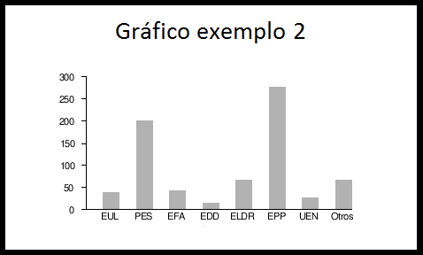

<div class="row">
    <div class="col-md-4">
        <h2>Visão macro</h2>
        
        <br />
        <br />
        
    </div>
    <div class="col-md-1"></div>
    <div class="col-md-7">
        <h2>Ocorrências em Aberto</h2>
        <div id="grid_ocorrencias" kendo-grid k-options="ocorrenciasGridOptions"
             ng-if="ocorrenciasGridOptions"></div>
    </div>
</div>